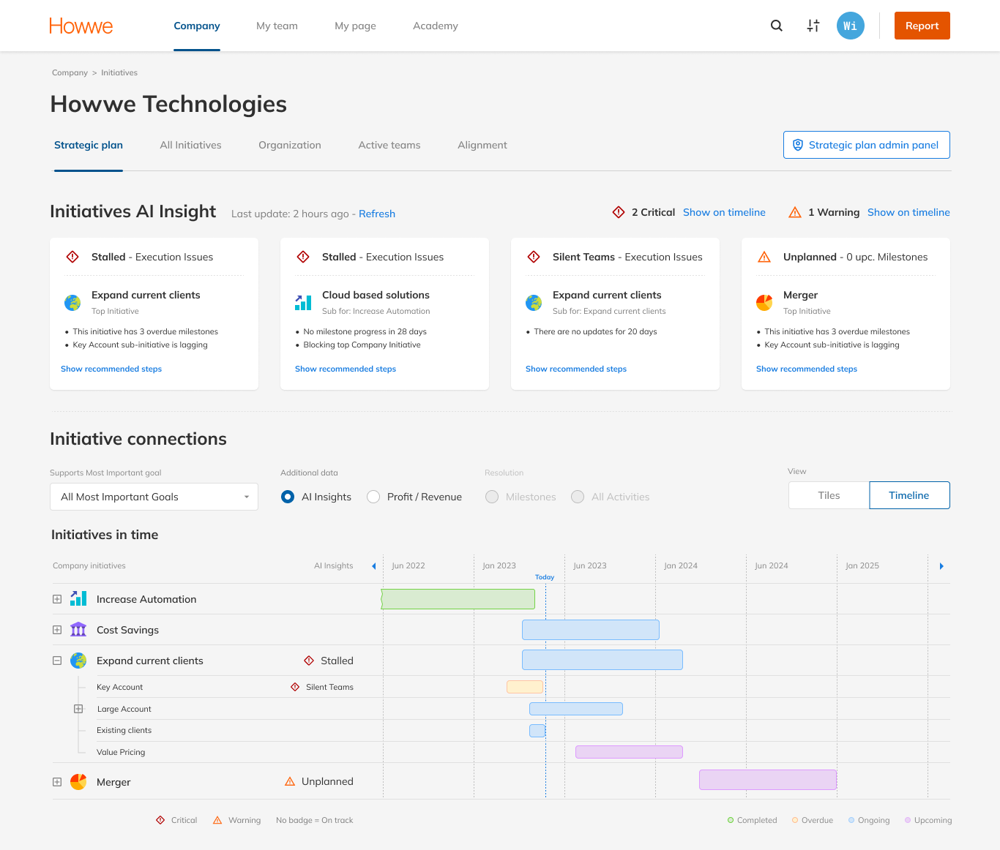

AI features · Enterprise SaaS · 2024-25
AI That Acts Before Problems Happen
Two AI features for an enterprise strategy platform: proactive risk detection across all initiatives, and AI-generated milestone planning. A dedicated AI page was the suggested direction - I proposed embedding insights into the views managers already use, and built both features on one rule: AI drafts, you approve.
Read the AI case →